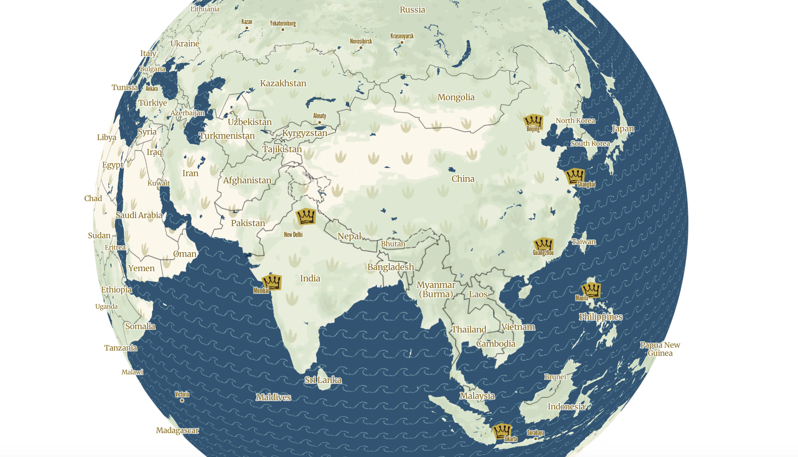

The main inspiration for this base map was from a story book, Where The Wild Things Are, by Maurice Sendak. I loved the inspiration so much I ate it up!

The main inspiration for this base map was from a story book, Where The Wild Things Are, by Maurice Sendak. I loved the inspiration so much I ate it up!
Throughout the map, Max, the protagonist of the book appears as an indicator of small neighborhoods. He is shown in his signature wolf costume stomping around. His crown serves as the marker of cities such as Madison and Chicago.

The patterns and colors were made to not take away from the map and allow data to be comprehensible at all zoom levels while also remaining faithful to the story!
This is Haverhill, Massachusetts, the first place that I read Where The Wild Things Are. Haverhill is also my hometown.
Madison, Wisconsin
Nairobi, Kenya
Östersund, Sweden
Credits:
Map created with Mapbox Studio
Data from openstreetmap
Designs from Canva and Where The Wild Things Are
Inspiration from Maurice Sendak